JuiceFS
源码地址：https://github.com/juicedata/juicefs，Go语言开发。
场景
海量数据设计的分布式文件系统，使用对象存储来做数据持久化。云端共享文件系统，POSIX、HDFS、NFS 兼容。
云端，主流的存储是对象存储，在计算/存储分离的情况下，大数据计算框架（MR、Spark等）需要进行对象存储的适配。
文件系统：
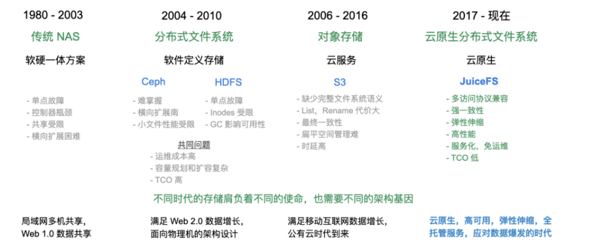
JuiceFS 则是把这些改进进一步抽象和产品化，让它们能够更好地服务于包括大数据在内的更多场景，帮助更多的公司改善云上大数据体验，而不用重复地去解决 S3 等对象存储带来的问题。
- 大数据分析：HDFS 兼容，没有任何特殊 API 侵入业务；与主流计算框架（Spark, Hadoop, Hive等）无缝衔接；无限扩展的存储空间；运维成本几乎为 0；完善的缓存机制，高于对象存储性能数倍。
- 机器学习：POSIX 兼容，可以支持所有机器学习、深度学习框架；共享能力提升团队管理、使用数据效率。
- 容器集群中的持久卷：Kubernetes CSI 支持；持久存储并与容器生存期独立；强一致性保证数据正确；接管数据存储需求，保证服务的无状态化。
- 共享工作区：没有 VPC 限制，可以在任意主机挂载；没有客户端并发读写限制；POSIX 兼容已有的数据流和脚本操作。
- 数据备份：POSIX 是运维工程师最友好的接口；无限平滑扩展的存储空间；跨云跨区自动复制；挂载不受 VPC 限制，方便所有主机访问；快照（snapshot）可用于快速恢复和数据验证。
特性
- POSIX 兼容：像本地文件系统一样使用，无缝对接已有应用，无业务侵入性；
- HDFS 兼容：完整兼容 HDFS API，提供更强的元数据性能；
- S3 兼容：提供 S3 网关 实现 S3 协议兼容的访问接口；
- 云原生：通过 CSI Driver 轻松地在 Kubernetes 中使用 JuiceFS；
- 分布式设计：同一文件系统可在上千台服务器同时挂载，高性能并发读写，共享数据；
- 强一致性：确认的文件修改会在所有服务器上立即可见，保证强一致性；
- 强悍性能：毫秒级延迟，近乎无限的吞吐量（取决于对象存储规模），查看性能测试结果；
- 数据安全：支持传输中加密（encryption in transit）和静态加密（encryption at rest），查看详情；
- 文件锁：支持 BSD 锁（flock）和 POSIX 锁（fcntl）；
- 数据压缩：支持 LZ4 和 Zstandard 压缩算法，节省存储空间。
可观测性
JuiceFS 可以通过自身的日志和分析工具很清晰的展示出上层应用对存储的所有访问细节，每个接口访问的关系，消耗的时间，通过下面图形化的方式，一看就很容易发现到底是存储系统慢，还是上层应用的调用存储 API 的方式错了，造成了阻塞。
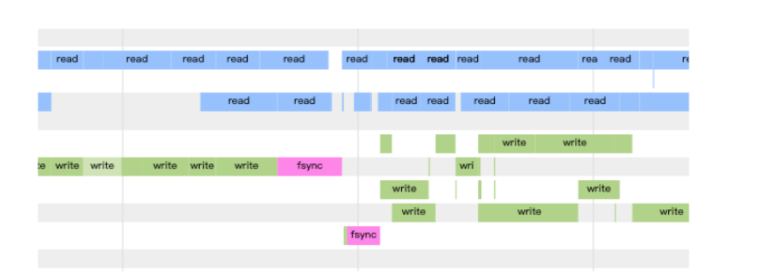
架构
Google File System的实现：
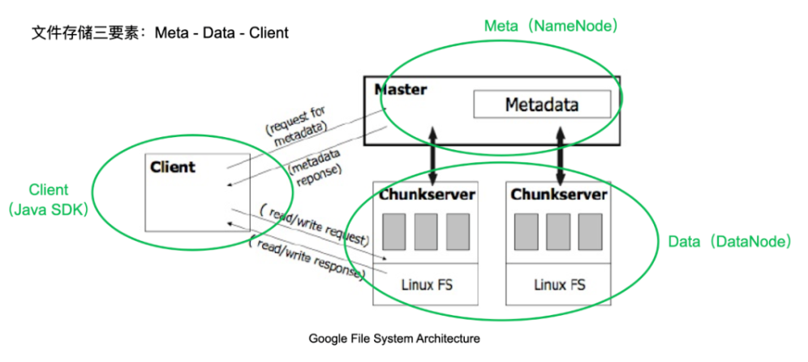
JuiceFS的实现三要素：
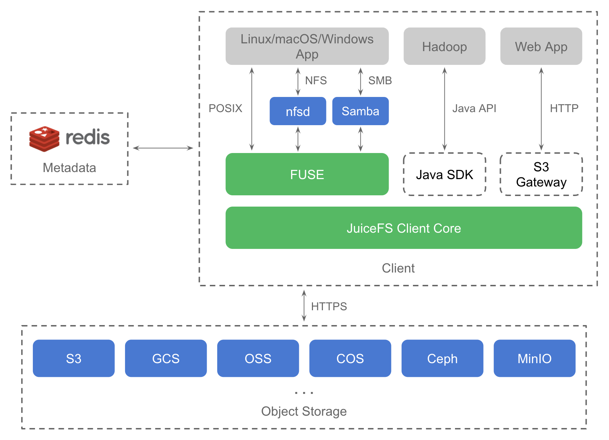
将元数据服务改造为支持多引擎的插件式架构，可以利用已有的开源数据库实现元数据存储。
Redis 作为第一个开源存储引擎：
- 是全内存的，可以满足元数据的低延时和高 IOPS 要求；
- 支持乐观事务，能够满足文件系统元数据操作的原子性要求；
- 有丰富的数据结构，易于实现文件系统的诸多 API；
- 有着非常广泛的社区和成熟的生态，运维 Redis 不会是一个问题；
元数据服务
元数据服务是个集群，通过 Raft 算法实现高可用并同时保证数据的强一致性。 元数据服务是专为文件系统优化的服务，非常高效和稳定。
元数据（metadata）包含文件名、文件大小、权限组、创建修改时间和目录结构。
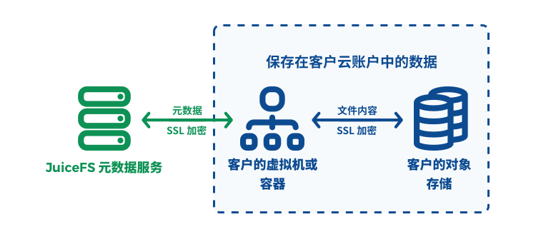
挂载客户端
jfsmount, 它负责跟元数据服务和对象存储通信，并通过 FUSE 实现 POSIX API。
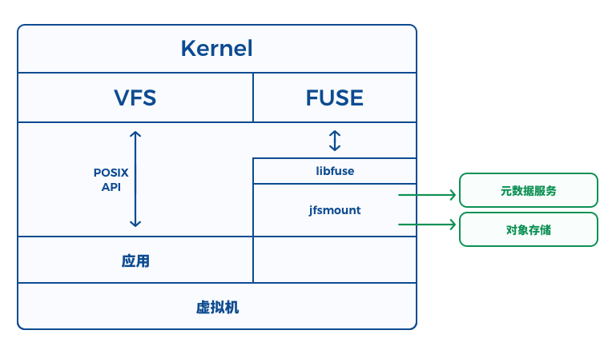
使用内置的 API（open, read, write 等）访问数据时，会在底层通过系统调用经过内核中的 VFS 以及 FUSE 模块转发到 jfsmount, 再请求元数据服务或者对象存储完成操作。
原理
存储方式
JuiceFS 会将数据格式化以后存储在对象存储（云存储），同时会将数据对应的元数据存储在 Redis 等数据库中。
任何存入 JuiceFS 的文件都会被拆分成固定大小的 "Chunk"，默认的容量上限是 64 MiB。
每个 Chunk 由一个或多个 "Slice" 组成，Slice 的长度不固定，取决于文件写入的方式。
每个 Slice 又会被进一步拆分成固定大小的 "Block"，默认为 4 MiB。最后，这些 Block 会被存储到对象存储。
与此同时，JuiceFS 会将每个文件以及它的 Chunks、Slices、Blocks 等元数据信息存储在元数据引擎中。
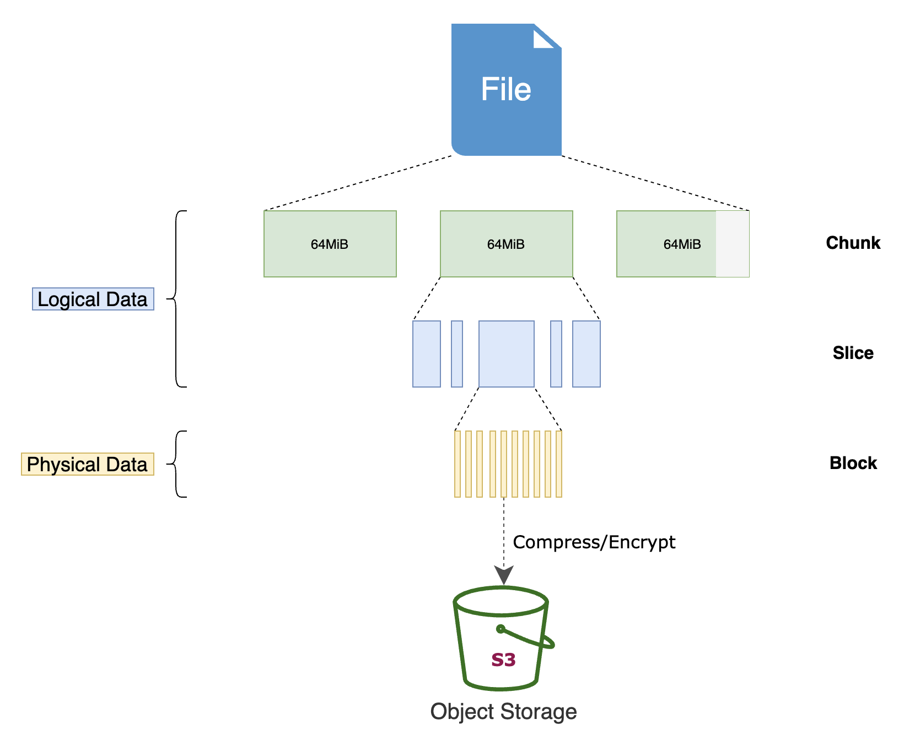
使用 JuiceFS，文件最终会被拆分成 Chunks、Slices 和 Blocks 存储在对象存储。
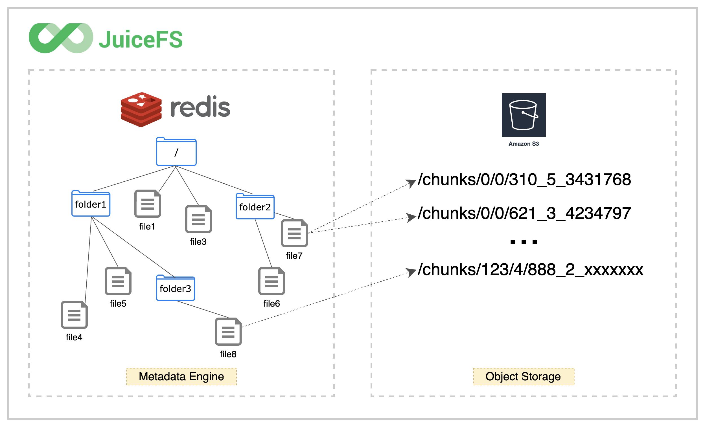
写入流程
在处理写请求时，JuiceFS 先将数据写入 Client 的内存缓冲区，并在其中按 Chunk/Slice 的形式进行管理。
Chunk 是根据文件内 offset 按 64 MiB 大小拆分的连续逻辑单元，不同 Chunk 之间完全隔离。
每个 Chunk 内会根据应用写请求的实际情况进一步拆分成 Slices；当新的写请求与已有的 Slice 连续或有重叠时，会直接在该 Slice 上进行更新，否则就创建新的 Slice。
Slice 是启动数据持久化的逻辑单元，其在 flush 时会先将数据按照默认 4 MiB 大小拆分成一个或多个连续的 Blocks，并上传到对象存储，每个 Block 对应一个 Object；然后再更新一次元数据，写入新的 Slice 信息。
使用 1 MiB IO 顺序写 1 GiB 文件，数据在各个组件中的形式如下图所示：
图中的压缩和加密默认未开启。欲启用相关功能需要在 format 文件系统的时候添加
--compress value或--encrypt-rsa-key value选项。
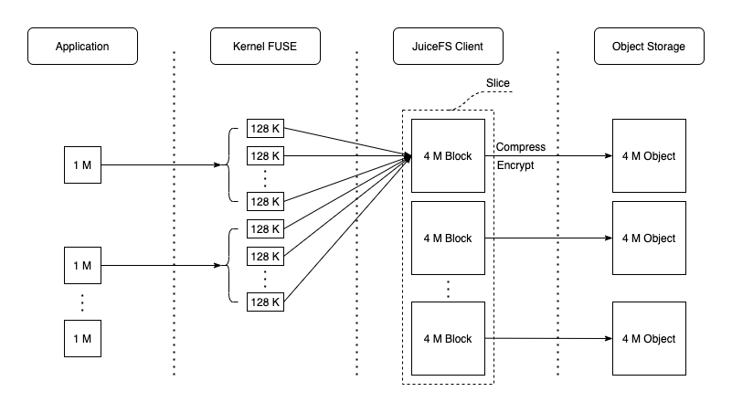
大文件内随机写的情况要复杂许多；每个 Chunk 内可能存在多个不连续的 Slice，使得一方面数据对象难以达到 4 MiB 大小，另一方面元数据需要多次更新。同时，当一个 Chunk 内已写入的 Slices 过多时，会触发 Compaction 来尝试合并与清理这些 Slices，这又会进一步增大系统的负担。因此，JuiceFS 在此类场景下会比顺序写有较明显的性能下降。
小文件的写入通常是在文件关闭时被上传到对象存储，对应 IO 大小一般就是文件大小。
对于这种不足一个 Block 的对象，JuiceFS 在上传的同时还会尝试写入到本地 Cache（由 --cache-dir 指定，可以是内存或硬盘），以期能提升后续可能的读请求速度。
由于写请求写入 Client 内存缓冲区即可返回，因此通常来说 JuiceFS 的 Write 时延非常低（几十微秒级别），真正上传到对象存储的动作由内部自动触发（单个 Slice 过大，Slice 数量过多，缓冲时间过长等）或应用主动触发（关闭文件、调用 fsync 等）。缓冲区中的数据只有在被持久化后才能释放，因此当写入并发比较大或者对象存储性能不足时，有可能占满缓冲区而导致写阻塞。具体而言，缓冲区的大小由挂载参数 --buffer-size 指定，默认为 300 MiB；其实时值可以在指标图的 usage.buf 一列中看到。
回写（Writeback）模式
当对数据的一致性和可靠性要求并不高时，还可以在挂载时添加 --writeback 以进一步提升系统性能。回写模式开启后，Slice flush 仅需写到本地 Staging 目录（与 Cache 共享）即可返回，数据由后台线程异步上传到对象存储。请注意，JuiceFS 的回写模式与通常理解的先写内存不同，是需要将数据写入本地 Cache 目录的（具体的行为根据 Cache 目录所在硬件和本地文件系统而定）。换个角度理解，此时本地目录就是对象存储的缓存层。
回写模式开启后，还会默认跳过对上传对象的大小检查，激进地尽量将所有数据都保留在 Cache 目录。这在一些会产生大量中间文件的场景（如软件编译等）特别有用。此外，JuiceFS v0.17 版本还新增了 --upload-delay 参数，用来延缓数据上传到对象存储的时间，以更激进地方式将其缓存在本地。如果在等待的时间内数据被应用删除，则无需再上传到对象存储，既提升了性能也节省了成本。同时相较于本地硬盘而言，JuiceFS 提供了后端保障，在 Cache 目录容量不足时依然会自动将数据上传，确保在应用侧不会因此而感知到错误。这个功能在应对 Spark shuffle 等有临时存储需求的场景时非常有效
读取流程
JuiceFS 在处理读请求时，一般会按照 4 MiB Block 对齐的方式去对象存储读取，实现一定的预读功能。同时，读取到的数据会写入本地 Cache 目录，以备后用（如指标图中的第 2 阶段，blockcache 有很高的写入带宽）。显然，在顺序读时，这些提前获取的数据都会被后续的请求访问到，Cache 命中率非常高，因此也能充分发挥出对象存储的读取性能。此时数据在各个组件中的流动如下图所示：
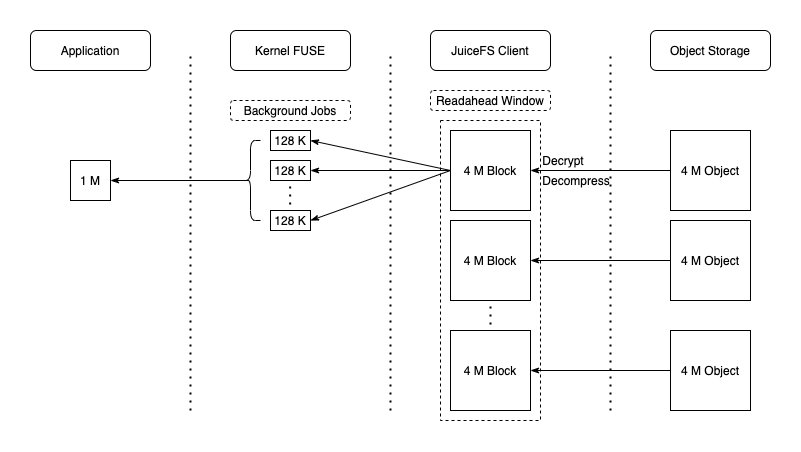
做大文件内随机小 IO 读取时，JuiceFS 的这种策略则效率不高，反而会因为读放大和本地 Cache 的频繁写入与驱逐使得系统资源的实际利用率降低。不幸的是，此类场景下一般的缓存策略很难有足够高的收益。此时可考虑的一个方向是尽可能提升缓存的整体容量，以期达到能几乎完全缓存所需数据的效果；另一个方向则可以直接将缓存关闭（设置 --cache-size 0），并尽可能提高对象存储的读取性能。
小文件的读取则比较简单，通常就是在一次请求里读取完整个文件。由于小文件写入时会直接被缓存起来，因此类似 JuiceFS bench 这种写入后不久就读取的访问模式基本都会在本地 Cache 目录命中，性能非常可观。
性能
HBase使用性能对比
YCSB 测试集，希望模拟线上生产环境中 HBase 集群恢复的场景，所以测试是在已经跑过一遍然后重启 HBase 的情况下进行。
测试环境
- 使用 AWS EMR
- Core 节点 2 个，4 核 16G，500G EBS SSD
- Region server 内存 6G
写入对比
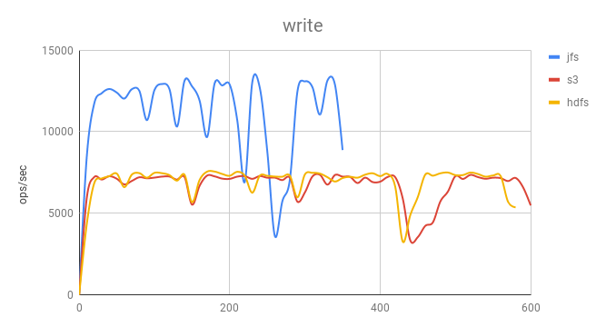
S3 和 HDFS 写入性能基本一致。而 JuiceFS 则有大约 70% 的提升。 由于 HBase 使用的是 LSM 树，它会使用日志文件和一个内存存储结构把随机写操作转换为顺序写，因此主要考验的就是文件系统的顺序写能力，JuiceFS 采用并发多线程写入，加上高性能的元数据能力，所以比直接使用 S3 快很多。
单条 GET 对比
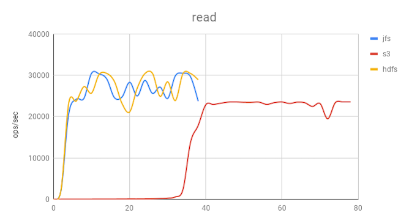
可以看到，使用 S3 时启动非常缓慢，主要是因为没有本地磁盘缓存，需要依靠 HBase Bucket Cache（采用file模式） 来在磁盘上缓存数据，用来提高缓存命中率，而这部分数据在 RegionSever 重启后会丢失，所有的数据都必须去 S3 读取，需要大量时间重新预热。
JuiceFS 支持数据缓存，可以把热数据完全缓存在本地磁盘上面。因此在 HBase 重启时，热数据依然可以通过本地磁盘中的缓存快速启动。
如果使用 SSD 做本地缓存盘，可以天然实现冷热数据分离的效果，冷数据在使用很少的情况下会自动从缓存中被淘汰，热数据会一直留在本地缓存盘上。
JuiceFS 在存储计算分离的情况下达到了 HDFS data locality 的性能水平。
更稳
使用 S3 做存储时，由于性能问题，WAL 并不能直接写在 S3 上，因此用户仍然需要额外维护一个 HDFS 集群来存放 WAL 数据。所以并没有彻底省去 HDFS 的搭建、监控、运维等工作量。
S3 API 有一部分是最终一致性保证，且没有原子的 rename 操作。